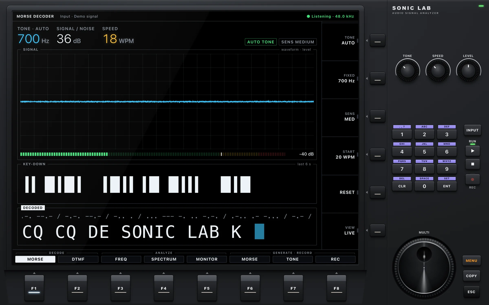
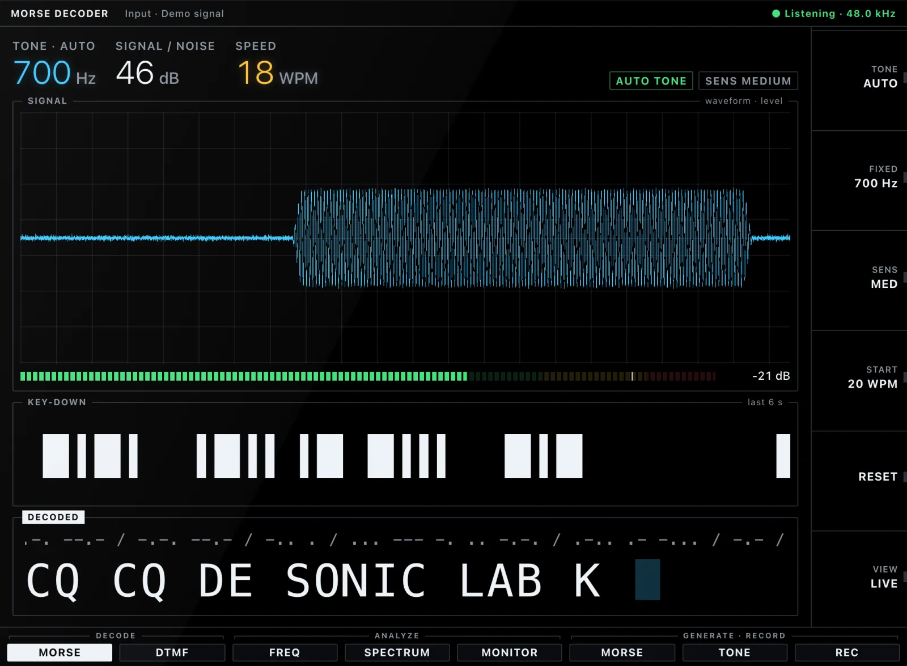
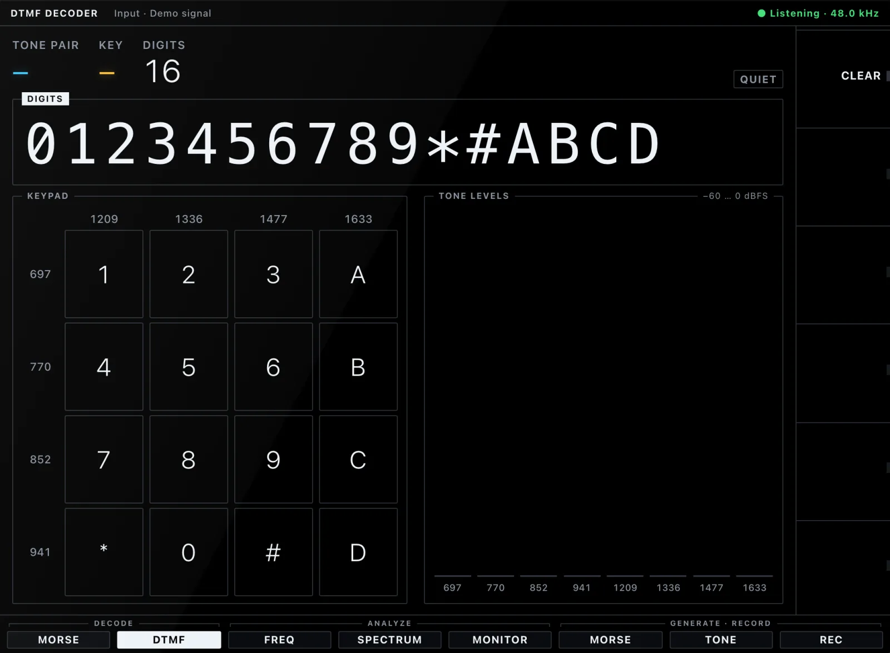
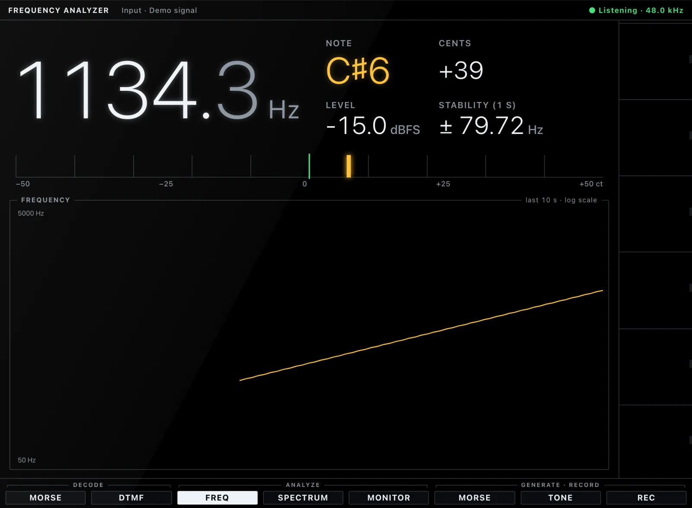
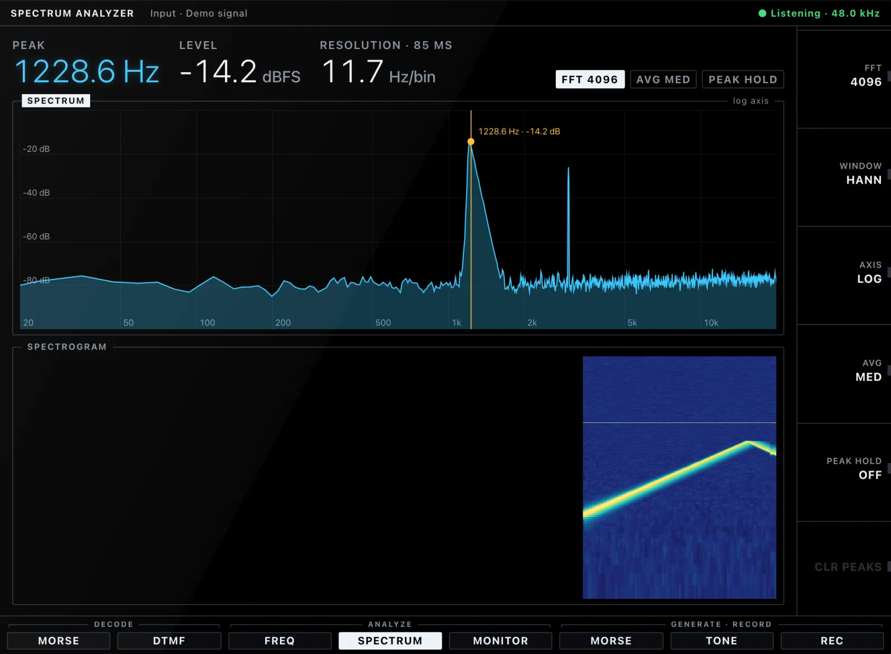
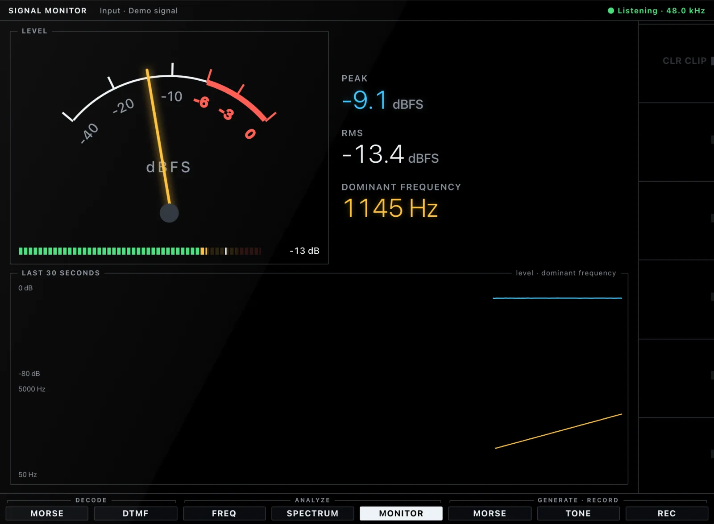
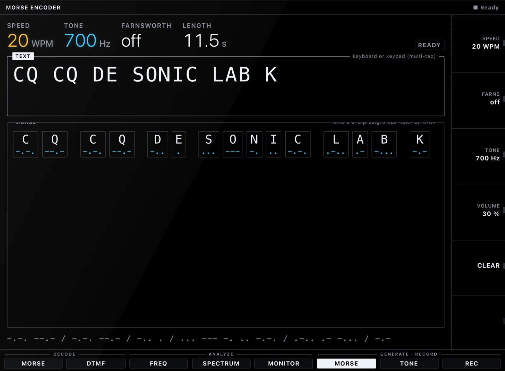
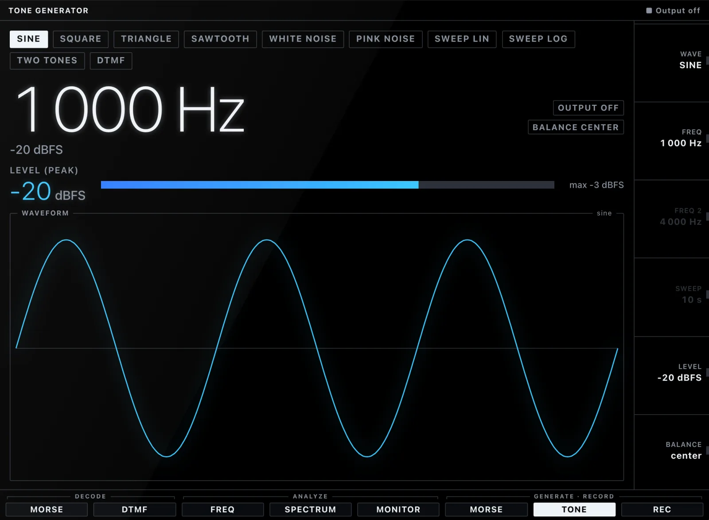
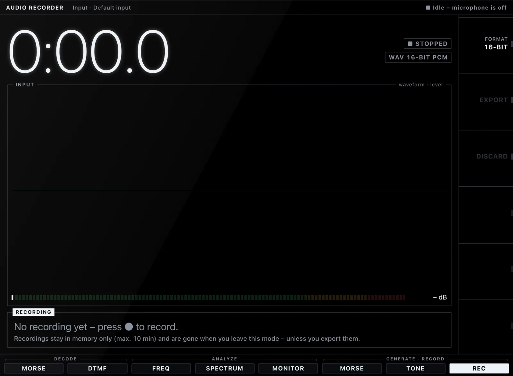

Noise
0.7% CER
white noise at 6 dB SNR, 20 WPM
Audio signal analyzer · Web · macOS · Windows · Linux
Decode Morse and DTMF, read spectra, generate tones and record — live, on your own device. No server. No cloud. No telemetry.
01 The front panel

True black and emissive — and the only part that changes. It adapts to every module and grows with the window.
Eight function keys, eight modules. One press and the display becomes a different instrument.
Six keys that do whatever the display shows beside them: tone, sensitivity, speed, reset, view.
Machined knobs for the values you touch most. Drag, scroll or use the keyboard.
Type values like on a real rig. ▶ starts the microphone, ■ releases it, ● records.
One big dial for fine-tuning whatever is selected. Spin it.
02 Eight modules
Automatic or fixed tone, adaptive threshold and speed. Unknown sequences are marked, not guessed — and every transmission lands in a log with time and speed.

All sixteen keys, checked the ITU way: frequency tolerance, twist and energy ratio. A live keypad and tone levels show exactly what was heard.

The dominant frequency with note name and cents, how stable it is, and where it has been for the last ten seconds.

FFT from 1,024 to 16,384 points, Hann or Blackman-Harris window, log or linear axis, averaging, peak hold and a scrolling spectrogram.

RMS and peak on an analog meter, a clipping warning, the dominant frequency and thirty seconds of history at a glance.

Text to Morse with a live preview and click-free playback, scheduled on the audio clock. Farnsworth spacing for learners included.

Sine, square, triangle, sawtooth, white and pink noise, linear and log sweeps, two-tone and DTMF — level-capped with fades, so nothing pops.

Up to ten minutes in memory, playback, and WAV export as 16-bit PCM or 32-bit float. Nothing is kept unless you export it.

03 Morse decoder
Real signals hiss, fade, click, wobble and echo around the room. The decoder tracks tone, threshold and speed on the fly — the top trace is what it hears, the white bars are what it keys.
0.7% CER
white noise at 6 dB SNR, 20 WPM
0% CER
QSB 10 dB over 3 s at 20 dB SNR
0% CER
2 clicks/s plus 3 off-frequency bursts/s
0% CER
timing jitter of ±25 %
2.2% CER
18 WPM characters, 8 WPM spacing
4of 6 rooms
under 5 % CER at 50 % reverberant energy — up from 0
CER = character error rate, measured by the project's seeded signal tests and a corpus of real recordings. Methods and limits: docs/AUDIO-PIPELINE.md.
03b Try it
A pocket version of the built-in Morse encoder. Type a message, set speed and tone, and press play — the same click-free keying the app schedules on the audio clock.
04 Analyze
Its own FFT, windows with known sidelobes, parabolic peak interpolation and a spectrogram that scrolls in real time. Everything you see here was recorded straight off the display.
05 Privacy
This page plays by the same rules: no cookies, no analytics, no third-party requests.
06 Platforms
The same Angular app runs in your browser and ships as a native Tauri 2 desktop app — small, fast, and allowed to touch the microphone and nothing else.
Chromium, Firefox and Safari. Serve it over HTTPS — or straight from localhost.
Static build · ZIP
One universal build for Apple silicon and Intel.
.app · .dmg
Installer of your choice, window position remembered across monitors.
.msi · .exe
Packages for the usual suspects, media streams enabled for WebKitGTK.
.deb · .rpm · AppImage
Desktop builds are currently unsigned — your OS will ask once. Free and open source under the MIT license.
Plug in a microphone — or press ▶ on the demo signal.